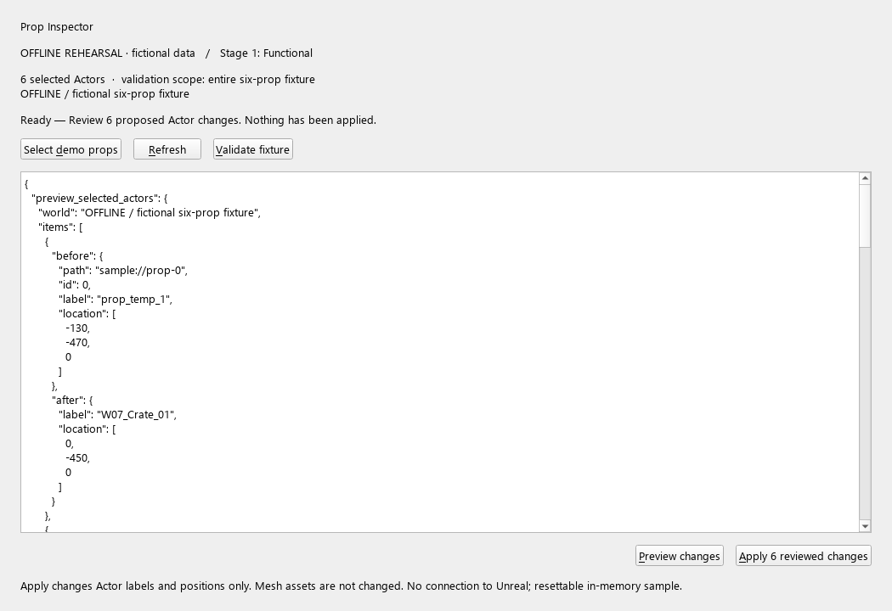
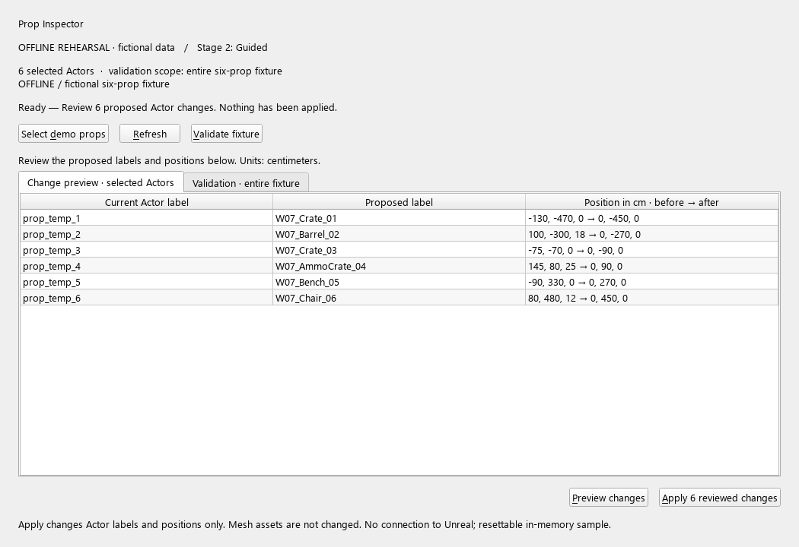
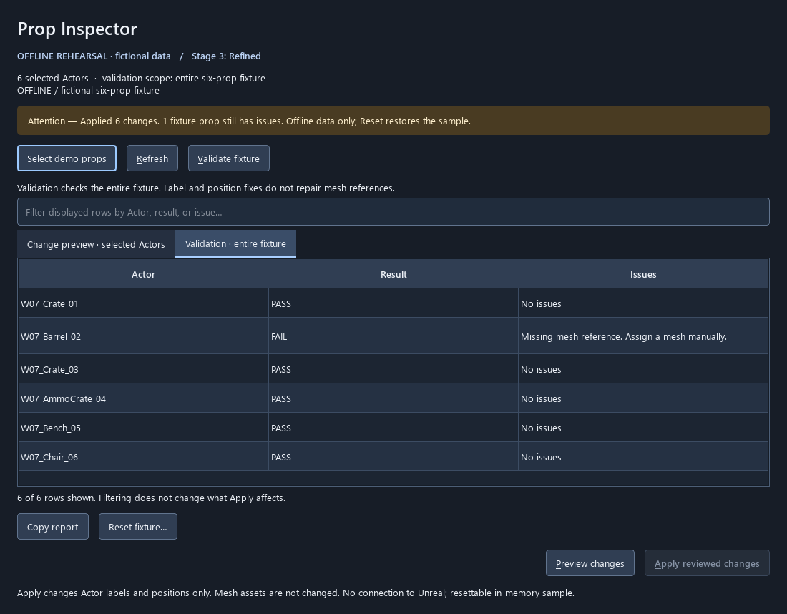

Jump to a section
- Prop Inspector · UI and functionality status
- Try the UI when you choose
- The three UI/UX stages
- Quality gates and evidence
- Captures for slide preparation
- 1 · Functional: expose data and actions
- 2 · Guided: make comparison and scope readable
- 3 · Refined: hierarchy, feedback and recovery
- Verify: a successful repair can still leave another issue
- Dependencies and extension points
Prop Inspector · UI and functionality status
The selected classroom workflows are now Material Setup and VFX Placement. This page retains the earlier Prop Inspector as a reference. The current class UI progression uses Material/VFX themselves.
Two-interface direction: this guide covers the actual PySide6 Qt Widgets tool, not a web UI. The required native Unreal tab is a separate interface; see the native UI investigation and assembly specification. The existing parented Qt window is not the native-tab implementation.
This is a working, fixture-specific Python tool with a new staged PySide6 interface. The existing backend inspects selection, validates the six props, previews Actor label/placement changes, applies a reviewed plan in one Undo transaction, resets the baseline, and exports selection reports. It is not a general asset pipeline.
Current readiness: the console backend has saved evidence of 12 passing Unreal
integration checks on 5.7.4 (Saved/Tooling/Checks/20261010_184405_265596/result.json).
The new UI has offline controller/widget tests and offscreen captures. Its live
Unreal adapter and window/event-loop integration are implemented but not yet
rehearsed inside Unreal. Do not describe the new UI as classroom-ready until the
live acceptance gate below passes. No editor or desktop window was opened during
this code preparation.
Try the UI when you choose
For this earlier reference only, run from the project root:
./.venv/Scripts/python.exe Scripts/ui.py --stage 3
This opens a standalone OFFLINE REHEARSAL window using invented six-prop data. Select demo props → Preview changes → inspect before/after → Apply. The sample intentionally has one missing mesh, so successful label/placement repair still leaves one validation failure. Reset restores sample labels/positions. No remote connection to Unreal exists. Stages 1 and 2 use the same command with another number.
For a later, instructor-controlled live rehearsal, on the saved demo map in Unreal's Python console:
import week07_tools as w7
# If w7 was already imported before the UI code was added:
import importlib
importlib.reload(w7)
w7.reload_tools()
w7.show_pyside_ui(stage=3)
w7.close_ui() closes the panel. Repeated show_ui() reuses the current panel;
changing stages replaces it. reload_tools() now closes the panel and removes its
callbacks, then reloads UI code. Reopen explicitly and create a fresh preview.
This is an external Qt window parented to Unreal, not a native dockable Slate or
Editor Utility Widget tab. Qt events are pumped from Slate; no blocking Qt event
loop is started inside Unreal.
The three UI/UX stages
| Stage | Implementation to read | What changes and why | Promotion gate |
|---|---|---|---|
| 1 · Functional | ui/views.py: FunctionalView; ui/controller.py |
Buttons replace console calls; read-only JSON exposes real data. Visible mode/scope/status and safe Apply already exist. | Operations work, errors appear, preview never edits, stale/empty plans cannot apply. |
| 2 · Guided | ui/views.py: GuidedView |
Compare current/proposed values in a table; separate selected-Actor preview from whole-fixture validation. Reduces JSON decoding and scope ambiguity. | A user can identify what changes, which objects are affected, and what remains invalid. |
| 3 · Refined | ui/views.py: RefinedView; ui/window.py |
Stronger hierarchy, restrained emphasis on Apply, explicit change count, filter, report copying, separate reset with Cancel default, focus indicators and text status. | Filtering cannot silently narrow Apply; controls fit, recovery is understandable, keyboard flow and live lifecycle work. |
Paths in this table are beneath Content/Python/week07_tooling/. These are real
presentation implementations sharing one controller, not three independent copies
of the mutation logic. Safety is not a late-stage enhancement. All stages are
available for comparison; gates govern teaching/release readiness, not a runtime
unlock mechanic. The lab and slide order remain provisional.
Quality gates and evidence
./.venv/Scripts/python.exe Scripts/ui_quality.py --tool props --stage 1
./.venv/Scripts/python.exe Scripts/ui_quality.py --tool props --stage 2
./.venv/Scripts/python.exe Scripts/ui_quality.py --tool props --stage 3
Each command runs cumulative automated checks, offscreen. Missing Qt fails the
gate. Stage 3 covers the original 13 controller/widget checks plus the material/VFX
policy tests and assistant UI workflow check. The full dev.py test
suite also runs these tests, but skips widget tests on machines without Qt; use the
explicit gate command when assessing UI readiness.
| Evidence | Status |
|---|---|
| Existing console/backend UE integration | Previously passed 12 checks; not rerun during code-only work. |
| New controller and Qt widget behavior | Automated offline checks available and run locally. |
| Offscreen layout/captures | Generated from actual Qt widgets; see gallery below. |
| Native Windows keyboard/DPI/screen-reader review | Pending manual review; no accessibility certification implied. |
| Live Unreal parenting, focus, event loop, Undo, reload/close | Pending instructor-controlled rehearsal. |
| General-purpose tools / asset import / finalized student lab | Not implemented by this UI work. |
Before presenting the final stage as complete, manually verify: opening twice doesn't duplicate windows; selection changes disable Apply; wrong map/PIE show a recoverable error; preview does not edit; applying selected props is one Undo step; Undo re-invalidates the plan; validation describes remaining issues; closing and reloading remove old callbacks; Tab/Alt shortcuts work; 100%/150%/200% scaling and narrow widths remain readable. This checklist is documentation for later, not an instruction to interrupt the current editor session.
Captures for slide preparation
These are offline UI captures, not evidence of Unreal integration. The mode label is intentionally visible. They can be regenerated without a desktop window:
./.venv/Scripts/python.exe Scripts/ui.py --stage 3 --render Docs/UI/captures
1 · Functional: expose data and actions

2 · Guided: make comparison and scope readable

3 · Refined: hierarchy, feedback and recovery

Verify: a successful repair can still leave another issue

Dependencies and extension points
Qt Widgets is supplied by pinned PySide6-Essentials==6.8.3 and shiboken6==6.8.3,
installed locally in ignored .deps/ui. These modules support the project's Python
3.11 environment. No packages were installed into the engine. On another machine:
./.venv/Scripts/python.exe -m ensurepip
./.venv/Scripts/python.exe -m pip install --target .deps/ui -r requirements-ui.txt
The core rules and console tool still need only Unreal/the standard library.
ui/dependencies.py explicitly adds .deps/ui only when needed. The Unreal stub
remains analysis-only. Never copy another Qt distribution into this folder or mix
bindings in the same editor process. Preserve the packages' bundled license files
if distributing dependencies; they are not checked into the course project here.
ui/controller.py: workflow and invalidation, independent of widgets and Unreal.ui/offline_backend.py: disposable data for rehearsal/tests; no fake engine APIs.editor/ui_backend.py: connects the panel to the existing guarded tool functions.ui/views.py: staged result presentation;ui/window.py: action wiring and styles.ui/host.py: explicit live window lifecycle and Slate event pumping.Scripts/ui.py: ordinary Python UI runner and headless captures.
The UI exposes select, refresh, validate, preview, apply, copy-validation-report and reset. Actor/component inspection and file export remain available through the existing console API; the panel does not yet include a component inspector or file export dialog. No startup hook, watcher, remote-execution server or automatic asset saving was added.
API references: Epic's Unreal 5.7 Python module documents external-window parenting and Slate callbacks; Qt for Python setup documents installation and its supported Python baseline. The pinned runtime was verified locally for offline widgets; that does not verify Unreal hosting.